🇮🇹Italia Travel Planner
Cestovní plánovač po Itálii pro lidi co tam jezdí často nebo dlouho. Sestaví itinerář, hlídá vstupenky, kreslí mapu, dělá rozpočet, varuje před ZTL zónami (kde dostaneš pokutu 80–200 € za vjezd autem). Funguje offline, žádné účty, žádné platby přes aplikaci.
React TypeScript Vite Tauri (Windows + Android) PWA
Co to dělá
Proč to vzniklo: cestování po Itálii má vlastní pravidla. Historická centra mají ZTL zóny (Zona Traffico Limitato) — když do nich vjedeš autem, dostaneš pokutu 80–200 €. Vstupenky do Vatikánu, Uffizi a Kolosea se kupují měsíc dopředu na konkrétní čas a den, jinak se nedostaneš. Obytné auto má jiné potřeby než osobák — potřebuješ Stellplatzy, area sosta, dump stations. A klasické cestovní appky to neřeší — buď tě nutí mít účet a kupovat všechno přes ně, nebo jsou pro Itálii naprosto slepé.
Jeden uživatel, všechno lokálně: aplikace patří mně, běží u mě v počítači, na telefonu jako PWA, nebo jako Windows desktop apka (Tauri). Žádný backend, žádný cloud, žádné API klíče. Plánuje cestu — itinerář, vstupenky, rozpočet, trasu. Skutečné nákupy (letenky, hotely, vstupenky) si potom kupuju sám na oficiálních stránkách — aplikace mi je jen otevře v prohlížeči přes deeplink. Žádná smlouva, žádná provize, žádný vendor lock-in.
Plánování od nuly: Zadám novou cestu (název, region, datum, počet osob, rozpočet, styl — městský pobyt / roadtrip / pobřeží / hory / víno & jídlo / camper). Aplikace mi pak nabídne čtyři způsoby dopravy s deeplinky (Kiwi pro letenky, Booking pro auto, Trenitalia pro vlaky). Pro roadtrip má samostatný plánovač s výběrem 10 zemí, live autocomplete měst přes OpenStreetMap/Nominatim (libovolné město v dané zemi, žádný předem daný seznam) a stylem trasy (Rychlá / Vyvážená / Zážitková).
Itinerář a vstupenky: Pro každý den 3 sekce (Ráno / Odpoledne / Večer) s konkrétními aktivitami a časy, plus tipy na jídlo, poznámky o dopravě, záložní plán pro déšť. Vstupenky se evidují s konkrétním datem, časem a confirmation kódem. Alternativní nabídky z GetYourGuide a Big Bus jsou pouze deeplinky se statusem „unknown“ nebo „pending user confirmation“ — aplikace je nikdy automaticky nepředpokládá jako zaplacené.
Camper režim: Unikátní feature, co většina cestovních appek nemá. Vytvořím profil mého obytného auta (rozměry, hmotnost, spotřeba, vybavení). Aplikace pak filtruje stopy podle typu (Stellplatz, Area sosta, Camping, Agriturismo, Service point, Free wild, …) a podle vybavení (voda, elektřina, WC, sprcha, černá voda, …). Varuje když místo nemá dostatečnou výšku/délku pro můj kemper, nebo když je v ZTL zóně. Plus camper-specific rozpočet (palivo + mýtné + camping + service).
Export do reálných nástrojů: Itinerář → Google Calendar (ICS), POI → Google My Maps (CSV), rozpočet → Excel, kompletní trip → JSON pro zálohu. Žádný proprietary formát, vše standardní.
Funguje úplně offline: Po prvním načtení je aplikace v cache prohlížeče nebo nainstalovaná jako desktop apka (Tauri NSIS installer, 1.4 MB). Když jsem v Itálii a roaming stojí 1 €/den, neplatím za žádný internet — apka mi všechno ukáže lokálně z paměti.
Klíčové funkce
- Plánování od nuly s deeplinky — Nová cesta s rozpočtem a stylem, 4 záložky dopravy s deeplinky na Kiwi / Booking / Trenitalia. Aplikace nákupy nezprostředkovává — otevře oficiální stránku v prohlížeči.
- Roadtrip plánovač pro 10 zemí — Výběr země odjezdu a cíle (CZ/IT/AT/SI/DE/SK/HR/PL/FR/CH), live autocomplete měst přes Nominatim OSM (libovolné město ve vybrané zemi, žádný pevný seznam), styl trasy, počet zastávek, multi-select zájmů.
- Itinerář den po dni — Ráno / Odpoledne / Večer s časy + jídlo + záložní plán pro déšť. Pro každou cestu samostatně, plně offline.
- Vstupenky s alternativami — Hlavní rezervace (Vatikán, Uffizi, Koloseum) s konkrétním datem + 7 alternativ z GetYourGuide a Big Bus jako manual deeplinky se statusem 'unknown'.
- Rozpočet s cap utilization — 12 kategorií (doprava, ubytování, jídlo, vstupenky, parkování, mýto, camping, …), vizuální bar kolik % je zaplaceno, povinné vs volitelné.
- Mapa POI + Google My Maps export — Body zájmu vizualizované barevnými ikonami, export CSV jedním klikem importovatelné do Google My Maps.
- Camper režim s ZTL warningy — Profil obytného auta (rozměry, hmotnost), 10 typů stopů, 11 facility chipů, warning badges když je místo v ZTL zóně nebo malé pro tvůj kemper.
- Funguje offline, multi-platform — Web PWA + Windows desktop (Tauri NSIS, 1.7 MB) + Android APK (Tauri, 6.9 MB) + portable web launcher — všechno z jednoho codebase, React app běží na všech třech. V Itálii nepotřebuje roaming.
- Plánovač cesty (v0.6.3) — Jedna obrazovka: založ cestu odkud → kam + datumy, uprav / archivuj / smaž cestu, přidávej dopravní spoje i ubytování. Konec roztahaného plánování přes víc záložek.
- Travel Import Center (v0.6.3) — Bezpečný import 7 typů (hotel · let · vlak · trajekt · vstupenka · aktivita · trasa) z JSON — jednotlivě, jako pole, nebo envelope
{ schema_version, items }. Náhled → potvrzení → zápis do itineráře. Booking/Kiwi běží agent-side (data dodá asistent jako JSON), ne přímé volání z appky. - Lodní doprava / ferry (v0.6.3) — Trajekty mezi přístavy (GNV, Moby, Tirrenia, Grimaldi…) s nočním badge 🌙, manuální deep-link, import do itineráře. Itálie bez trajektů na Sardinii/Sicílii nedává smysl.
- Itinerář krok po kroku + odkaz na dopravce (v0.6.3) — Sloučený výstup po dnech: doprava + ubytování + vstupenky + aktivity chronologicky. U každého spoje tlačítko „Otevřít u dopravce" (Trenitalia / Italo / GNV…). Tisk / PDF.
- Pravdivé statusy konektorů (v0.6.3) — Registr nepředstírá živé API. Každý konektor má poctivý režim: agent / ICS export / CSV export / manual deep-link / mock. Žádné tokeny, žádné platby, žádný scraping.
Náhledy


Live screenshoty — v0.6.1 (Leaflet mapy)
Screenshoty z funkční instalace v0.6.1 — po přidání Leaflet/OSRM map a napojení akčních tlačítek na store.
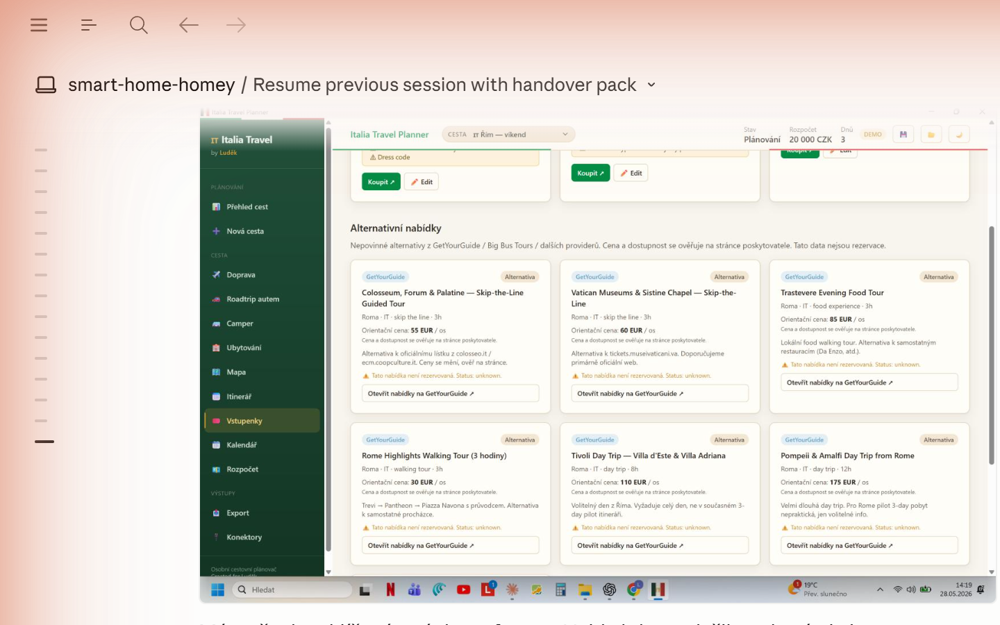
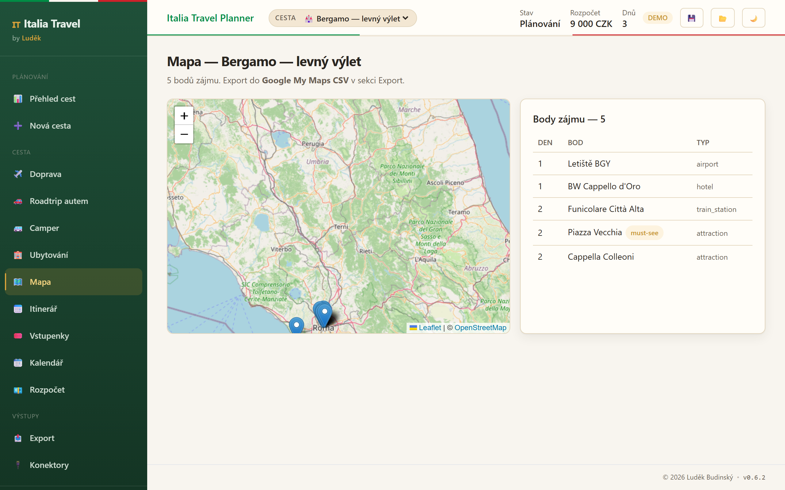
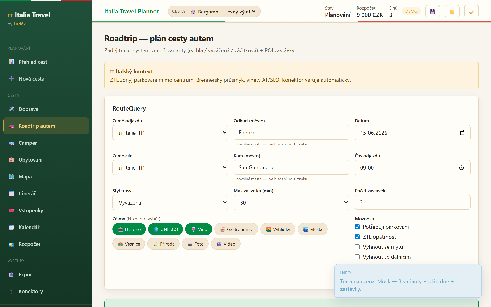
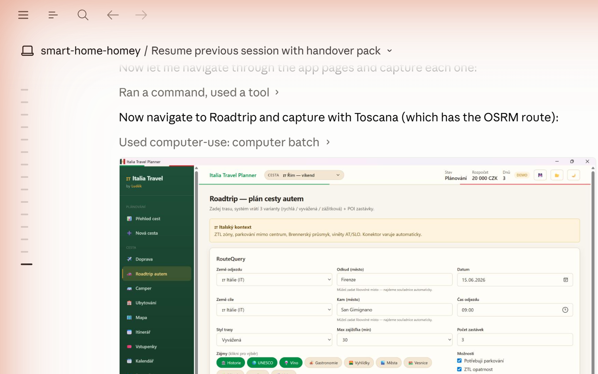
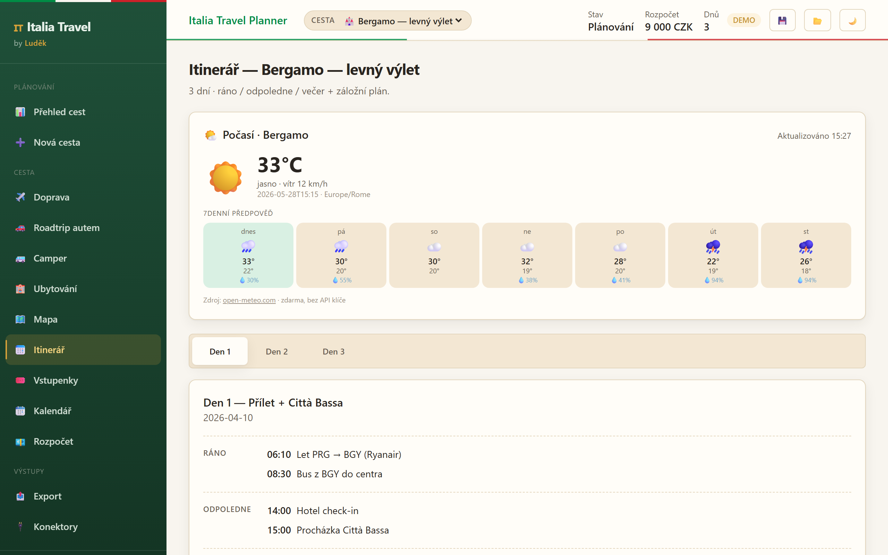
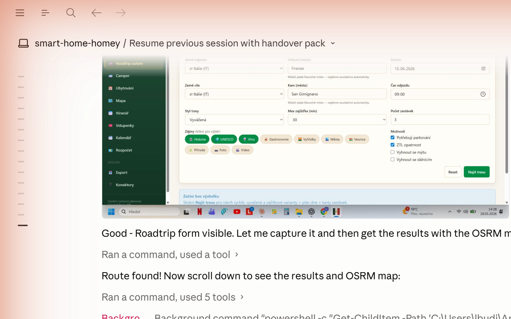
📱 Mobilní aplikace
Na mobilu běží jako Android APK (Tauri, 6.9 MB) nebo jako PWA — přidej stránku na plochu z prohlížeče. Mobilní layout je kompletně oddělený od desktopového — místo sidebaru je spodní 6-ikonová navigace, stránky jsou optimalizované pro dotek a jednu ruku.
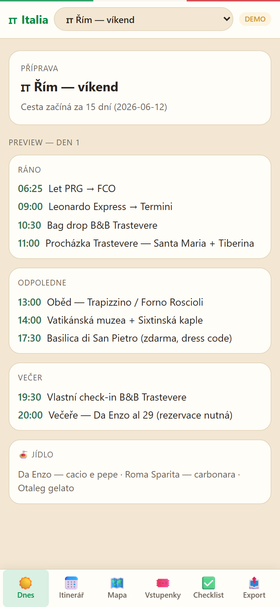
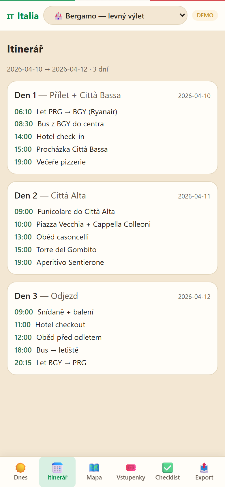
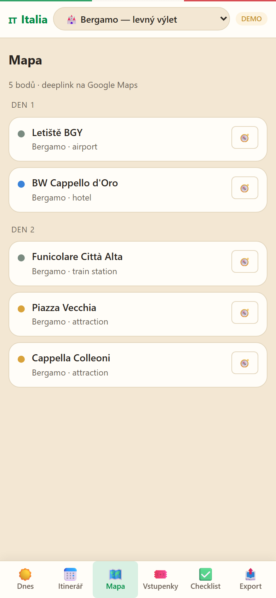
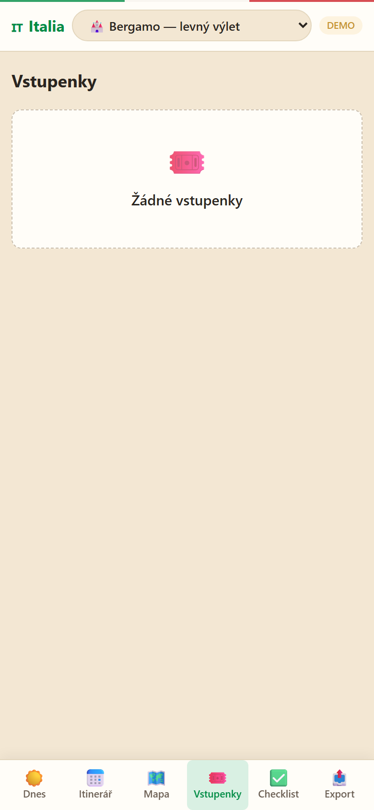
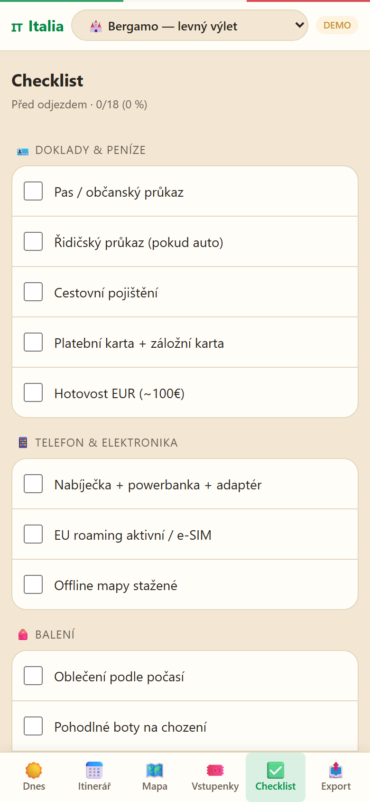
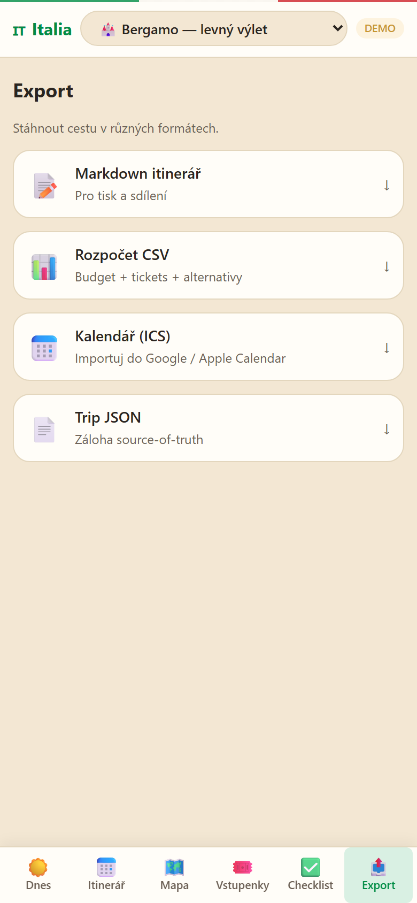
Live screenshoty — v0.6.3 (Plánovač + Import Center + Ferry)
Z funkční instalace v0.6.3. Nový unifikovaný plánovač, Travel Import Center se 7 typy položek (vč. trajektů) a itinerář s odkazem „Otevřít u dopravce".
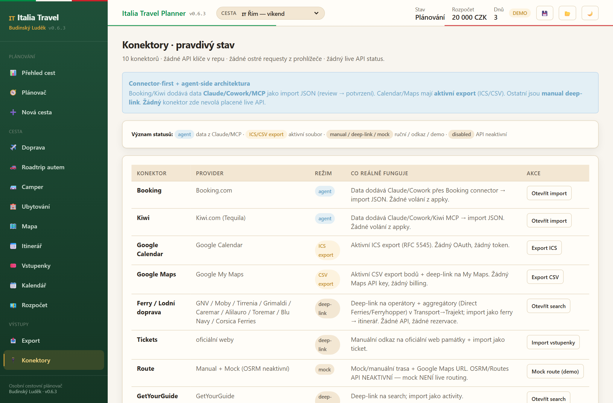
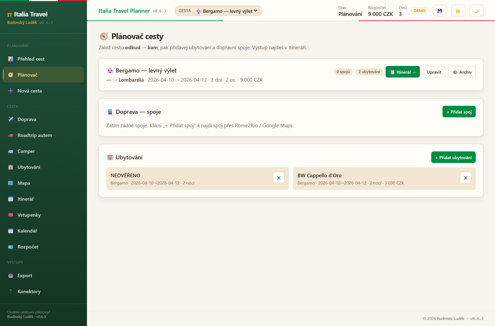
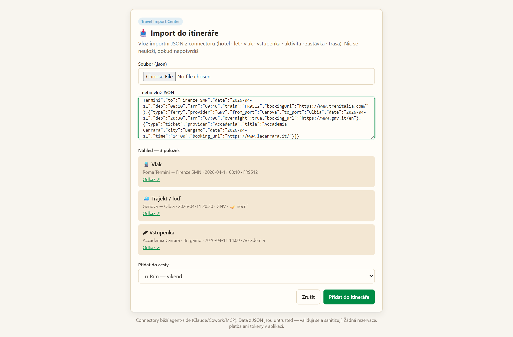
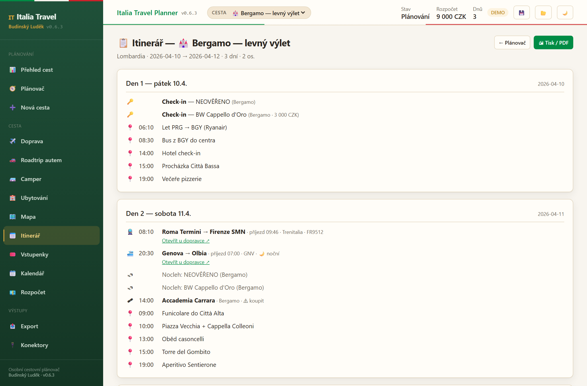
Stav
Funkční verze 0.6.3 (29. 5. 2026). Windows NSIS installer (1,7 MB) + Android APK (6,9 MB, arm64) + PWA + web launcher. Soukromé pro vlastní cesty — žádné public hosting, žádné účty, žádné platby přes aplikaci.
- v0.6.3 (29. 5. 2026) — Plánovač cest (založ cestu odkud–kam, přidávej dopravu a ubytování), Travel Import Center pro 7 typů položek (vlak / let / trajekt / ubytování / vstupenka / aktivita / mezizastávka) včetně dávkového importu přes obálku, doprava trajektem, krok-za-krokem itinerář s odkazem „Otevřít u dopravce ↗", pravdivé stavy konektorů (žádné falešné „live API"), perzistence aktuální cesty, sjednocené branding/metadata na „Budinský Luděk". Windows NSIS installer (1,7 MB) + Android APK (6,9 MB, arm64).
- v0.7.0 (28. 5. 2026) — Android APK (Tauri, arm64), oprava Czech NSIS stringů v instalátoru, verze + jméno viditelné v Sidebaru a Topbaru, update banner (automatická kontrola nové verze), oprava build skriptu (správná cesta pro APK výstup).
- v0.6.1 (28. 5. 2026) — Leaflet/OSM mapa s reálnými piny, OSRM polyline pro roadtrip trasy, napojení akčních tlačítek zastávek na store (Přidat do itineráře / Přidat na mapu / Přidat do kalendáře).